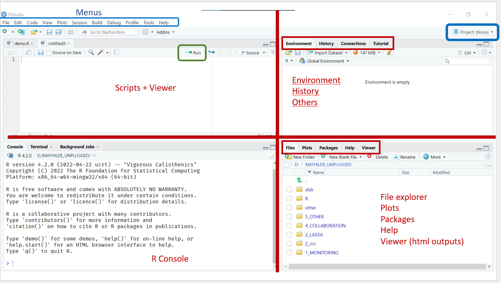
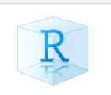
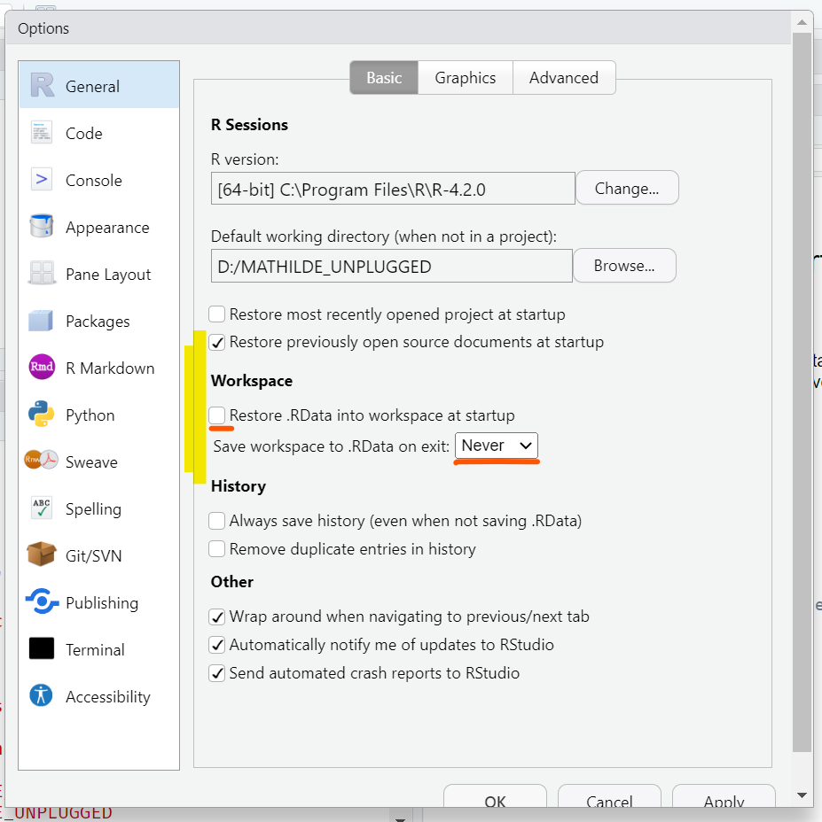

Importation des données
Objectifs
- Créer un projet RStudio
- Mettre en place un code organisé et bien documenté
- Installer et charger des paquets dans la session
- Ecrire des chemins d’accès aux fichiers robustes
- Importer et inspecter des données dans R
Les principes vus dans le module FETCH sur la gestion des données s’appliquent aussi à votre code : on souhaite écrire un script qui fonctionne maintenant, mais également dans le futur, et qui soit partageable. Il existe quelques bonnes pratiques qui peuvent nous aider à aller dans cette direction, et la première est d’avoir un code source propre et bien organisé.
Mise en place du projet
Structure des dossiers
Si ce n’est pas déjà fait, téléchargez le dossier du cours décompressez-le. Sauvegardez le dossier non compressé à un endroit non connecté à OneDrive et ouvrez-le.
Ce dossier illustre une structure typique et recommandée pour vos projets de code :
- 📁 data
- 📁 raw
- 📁 clean
- 📁 R
- 📁 outputs
Ce dossier sera votre répertoire de travail pour toutes les sessions de ce cours. Vous y créerez un projet RStudio (explications ci-dessous), et y enregistrerez tous vos scripts (sous dossier R). Les données brutes se trouvent déjà dans data/raw.
Définitions
Voici deux concepts importants que nous allons rencontrer dans cette session :
Répertoire de travail. Le répertoire de travail est l’emplacement (dossier) où votre session R en cours travaille. Si vous enregistrez un fichier, par exemple, il sera enregistré dans ce dossier par défaut. De même, Si vous ouvrez un fichier, ce dossier sera affiché par défaut. Tous les chemins relatifs auront ce dossier pour origine. Par défaut, R choisit généralement votre dossier “Documents” comme répertoire de travail sur les machines Windows.
Racine. La racine fait référence au niveau de dossier le plus élevé du répertoire de travail. Si le dossier de votre cours s’appelle FETCHR la racine se trouverait directement à l’intérieur de celui-ci (et non dans l’un de ses sous-dossiers comme R ou data).
Projets RStudio
Un projet RStudio est outil qui va faciliter votre vie et aider RStudio à trouver les différents fichiers.
Pour rappel, votre interface doit ressembler à ceci :

Ouvrez RStudio et suivez ces étapes pour créer un nouveau projet :
- cliquez sur
File > New Project > Existing Directory > Browse, - naviguez jusqu’au dossier du cours (en l’ouvrant)
- cliquez sur
Create Project.
Dans l’explorateur Windows, examinez le dossier du cours. Vous devriez maintenant voir un nouveau fichier avec l’extension .Rproj qui a une petite icône bleue avec un R au milieu

Si vous ne voyez pas ce fichier, c’est probablement parce qu’il est caché par défaut sur votre ordinateur. Pour modifier ce paramètre dans l’explorateur Windows, allez dans le menu Afficher et sélectionnez Extensions de noms de fichier.
Lorsque vous ouvrez un projet RStudio, RStudio démarre une nouvelle session R spécifique à ce projet, ouvre les fichiers associés et définit la racine de votre dossier comme répertoire de travail. Une conséquence immédiate est que le panneau Files en bas à droite de l’interface montre les sous dossiers présents dans le répertoire de travail, i.e. votre dossier de cours.
Il est fortement recommandé de mettre en place un projet RStudio distinct pour chacune de vos analyses afin de garantir que les fichiers de vos projets restent organisés.
Il existe plusieurs façons d’ouvrir un projet RStudio :
- Utilisez le menu RStudio
File > Open Projectpuis sélectionnez le fichier.Rprojapproprié - Cliquez sur le bouton
Project: (none)en haut à droite de l’interface RStudio - Naviguez dans l’explorateur de fichiers Windows jusqu’à votre dossier de cours et double-cliquez sur le fichier avec l’extension
.Rproj
Les options de RStudio
Avant de poursuivre, allons modifier certaines des options de RStudio qui peuvent causer des problèmes.
Ouvrez les options globales (Tools > Global Options) et ouvrez l’onglet General (menu de gauche). Déselectionnez toutes les cases des sections R Sessions, Workspace et History.

Lorsque ces options sont activées, RStudio enregistre les objets de votre environnement et les charge à chaque fois que vous ouvrez une nouvelle session R. Ca semble être une bonne idée, mais il est en fait préférable de toujours commencer votre travail à partir d’une session R vide afin d’éviter les erreurs.
N’oubliez pas que toutes les commandes nécessaires au nettoyage et à l’analyse de vos données doivent être enregistrées explicitement dans un script, dans le bon ordre. Faire retourner le script devrait arriver aux mêmes résultats que précédement.
Création d’un nouveau script
Ouvrez un nouveau script et enregistrez-le dans le sous-dossier R de votre projet sous le nom import_data.R.
Ajoutez des métadonnées au début du script, comme recommandé lors première session, en utilisant des commentaires. Veillez à inclure :
- Le titre
- L’auteur du script
- La date de création
- Une description rapide de ce que fait le script
Nous sommes prêts à commencer à coder
Paquets
Les paquets [packages] sont des collections de fonctions qui étendent les fonctionalités de R. Vous en utiliserez un grand nombre pendant ce cours et dans votre travail quotidien. R étant open-souce, les packages sont téléchargeable et utilisable gratuitement.
Dans ce cours, nous utiliserons une convention commune qui est de référencer les paquets entre {}. Par exemple {ggplot2} est le nom du paquet ggplot2 qui contient des fonctions pour créer des graphes, telles que ggplot(), geom_point() etc…
Installation
La fonction install.packages() télécharge et installe un nouveau paquet sur votre ordinateur, dans la bibliothèque de paquets associée à R. Vous n’avez à faire cette opération qu’une seule fois par paquet et ordinateur.
install.packages("here") # installe le paquet {here} N’oubliez pas de mettre le nom du paquet entre guillemets lorsque vous utilisez la commande install.packages(). Que se passe-t-il si vous ne le faites pas ?
Si vous suivez cette session dans le cadre d’un cours, pour éviter tout problème potentiel de connectivité internet pendant la formation, nous vous avons déjà fait installer la plupart des paquets du cours.
Si vous suivez ce tutoriel seul ou si vous n’avez pas encore installé les paquets, vous devrez installer manuellement chaque nouveau paquet que nous rencontrerons avec la fonction install.packages().
Utilisation
Une fois qu’un paquet est installé, il faut indiquer à R que nous souhaitons l’utiliser pour une session donnée en le chargeant dans la session avec la fonction library().
library(here) # charge le paquet {here} dans la sessionUtilisez la fonction library() pour charger les paquets here et rio qui seront utilisés aujourd’hui.
Il se peut que vous obteniez parfois un message d’avertissement signalant que certaines fonctions ont été masquées ou que la version actuelle du paquet a été construite pour une version différente de R. Ces messages ne doivent pas vous inquiéter, mais il faut les lire et essayer de comprendre ce qui se passe.
Exécutez le code suivant. Comprenez-vous le message d’erreur ?
library(ggplot)Le code ci-dessus génère une erreur car il y a une faute de frappe dans le nom du paquet, et vous avez donc essayé de charger un paquet qui n’existe pas. Rappelez-vous que R est pénible, et en particulier est sensible à la casse : beaucoup de vos erreurs viendront de petites fautes dans les noms de fonctions ou d’objets. Ici, par exemple, nous voulions charger le paquet ggplot2 mais nous avons écrit ggplot à la place.
Il est recommandé d’avoir une section au début de votre script qui charge tous les paquets dont vous aurez besoin dans votre script en un seul endroit :
# Packages ----------------------------
library(tidyverse) # manipulation de données
library(lubridate) # manipulation des datesCelà permet de savoir rapidement quels paquets doivent être installés pour exécuter un script.
Créez une section “Paquets” dans votre script à l’aide de commentaires
Mettre à jour les paquets
R dispose d’une communauté de développeurs très active et il est assez courant que les paquets soient mis à jour, avec de nouvelles fonctionalités ou des corrections de bugs. Pour mettre à jour les paquets de votre bibliothèque, rendez-vous dans l’onglet Packages du panneau inférieur droit et cliquez sur Update. N’oubliez pas que vous devez être connecté à internet pendant ce processus.
La mise à jour de certains paquets peut parfois changer le comportement de certaines fonctions, ce qui peut casser votre code. Pas de panique. La meilleure pratique consiste à adapter votre code mais, dans le pire des cas, vous pouvez installer une ancienne version du paquet incriminé.
Importation de données
Trouver son chemin…
Pour ouvrir un fichier dans R, vous devez fournir un chemin d’accès au fichier. Un chemin d’accès est simplement un (long) nom pour un fichier qui inclut son emplacement sur votre ordinateur. Les chemins d’accès peuvent être absolus ou relatifs.
Chemins d’accès absolus
Les chemins d’accès absolus sont spécifiques à votre ordinateur et vont jusqu’au niveau de votre disque dur. Par exemple : D:/OneDrive - MSF/Documents/monitoring/cholera/fancy_project/data/raw/example_linelist.xlsx. Il est clair que ce chemin ne fonctionne que sur un ordinateur particulier.
L’utilisation de chemins absolus encodés en dur est fortement déconseillé car cela rend votre code fragile et augmente la maintenance : en effet, les chemins devront tous être mis à jour chaque fois quelqu’un d’autre exécute votre code, ou que le dossier du projet est déplacé sur votre ordinateur.
Chemins d’accès relatifs
Les chemins relatifs sont définis par rapport à votre répertoire de travail. Comme l’emplacement du fichier .Rproj définit le répertoire de travail, les chemins sont relatifs à cette racine. Pour vous, un chemin relatif ressemblera à ça : data/raw/example_linelist.xlsx.
Cela signifie que tant que la structure interne du dossier contenant votre projet est préservée, le chemin d’accès relatif sera valable quelque soit l’ordinateur.
Chemins d’accès robustes avec la fonction here()
Le paquet {here} dispose d’une fonction here() qui aide à créer des chemins d’accès. Elle présente deux avantages :
Elle détecte la présence d’un fichier
.Rprojet est capable de construire un chemin absolu à partir d’un chemin relatif dans votre projet RStudio.Elle choisit automatiquement le séparateur adapté à votre système d’exploitation :
/,\ou//.
library(here)
here("data", "raw", "example_linelist.xlsx")[1] "/tmp/RtmpRJBDYU/file780438226a18/data/raw/example_linelist.xlsx"library(here)
here("data", "raw", "example_linelist.xlsx")[1] "/tmp/RtmpRJBDYU/file780438226a18/data/raw/example_linelist.xlsx"Voyez comme nous n’avons défini que le chemin relatif et la fonction a reconstitué le chemin absolu. Celà marchera donc sur l’ordinateur d’un collègue, y compris sur un autre système d’exploitation, du moment que la structure du répertoire de travail est intacte.
Nous vous encourageons fortement à utiliser here() chaque fois que vous devez créer un chemin d’accès à un fichier.
Exécutez le code ci-dessus dans la console. Quel chemin d’accès here("data", "raw") vous donne-t-il ?
Utilisez here() pour créer le chemin vers le fichier Moissalla-rougeole-liste-lineaire-FR.xlsx.
here() crée une chaîne de caractères contenant l’adresse d’un fichier, mais ne vérifie pas si ce fichier existe réellement sur votre ordinateur. Si le fichier est absent ou s’il y a une faute de frappe dans votre code, vous obtiendrez une erreur lors de l’utilisation du chemin ainsi créé. Vous pouvez tester si un fichier existe à cette adresse avec la fonction file.exists().
On veut souvent définir plusieurs chemins dans un projet (données brutes, données propres, où sauver les graphes etc.). C’est une bonne pratique que de créer une nouvelle section au début de votre script, après le chargement des paquets, pour définir et stocker les chemins d’accès dans des objets.
Importer les données
Dans R, différents formats de fichiers sont importés par différentes fonctions spécialisées, ce qui est fastidieux à mémoriser et à charger. La fonction import() du paquet {rio} nous fait gagner du temps en reconnaissant l’extension des fichiers et en appellent automatiquement une fonction spécialisée pour charger les données.
Comme import() ne fait qu’appeler d’autres fonctions en arrière-plan, il est possible qu’elle ait besoin d’arguments optionnels spécifiques pour certains types de fichier.
La (longue) liste des types de fichiers pris en charge par {rio} est sur le site du paquet. Dans la suite de la leçon, nous nous concentrerons sur l’importation de données à partir de fichiers Excel .xlsx.
Import de la première feuille
Au minimum la fonction import() a besoin qu’on lui donne le chemin du fichier avec l’argument file :
import(file = here("data", "raw", "example_linelist.xlsx"))Notez que nous avons imbriqué la commande here() à l’intérieur de la commande import(). L’imbrication de fonctions est autorisée et même courante en R. R évalue les fonctions imbriquées de l’intérieur (here()) à l’extérieur (import()). La valeur renvoyée par here() est donc utilisée comme valeur d’entrée d’import().
Importez le fichier Moissalla-rougeole-liste-lineaire-FR.xlsx en utilisant here() et import().
Si votre importation a fonctionné correctement, R affichera les données dans la console mais ne les enregistrera pas dans l’environnement car nous ne les avons pas assignées à un objet.
Réimportez vos données, mais cette fois-ci, sauvegardez-les dans un objet appelé df_linelist.
Si votre jeu de données est très gros, il vaut mieux éviter de l’afficher dans la console…
Import d’une autre feuille
Comme vous venez de le voir, la fonction import() importe la première feuille d’un fichier Excel par défaut. Il est cependant possible de passer le numéro de la feuille ou son nom (en chaîne de caractères) à l’argument which :
import(file = here("data", "raw", "example_linelist.xlsx"), # chemin
which = 2) # spécifie la deuxième feuilleNotez que l’argument which est spécifique aux types de fichiers comportant plusieurs feuilles, tels que les fichiers Excel ou .Rdata. Si vous essayez de l’utiliser sur un fichier .csv l’argument sera ignoré.
Aperçu des données
Nous avons importé un jeu de données dans R et l’avons assigné à un objet (df_linelist). Nous pouvons maintenant inspecter le data frame créé pour vérifier que l’export s’est bien passé, et commencer à évaluer le nettoyage à faire.
Nous pouvons commencer par jeter un coup d’œil rapide aux premières lignes du data frame à l’aide de la fonction head(). Son premier argument est le data frame à inspecter et le second, n, accepte un nombre de lignes à afficher (optionnel).
head(df_linelist, n = 10) # Affiche les 10 premières lignesUtilisez head() pour examiner les 12 premières lignes de df_linelist.
Nous pouvons inspecter la structure du data frame à partir de l’onglet Environnement dans le panneau supérieur droit. Nous pouvons également visualiser le data frame dans le le visualiseur de données de RStudio (en haut à gauche).
Cliquez sur le bouton rond bleu à côté de df_linelist dans votre environnement pour examiner sa structure. Cliquez ensuite sur le nom du data frame pour le visualiser.
Le visualiseur permet d’afficher le data frame comme dans un tableur et est un moyen pratique d’examiner rapidement vos données. Vous pouvez trier et filtrer vos données dans cet onglet mais ces actions ne modifieront pas l’objet df_linelist. Le visualiseur peut également être ouvert en utilisant directement la fonction View() sur le data frame.
C’est fini !
Bravo et n’oubliez pas de sauvegarder votre code !
Pour aller plus loin
Exercices supplémentaires
- Utilisez
dim()pour examiner les dimensions de votre data frame. - Utilisez
str()pour vérifier le type de données de chaque colonne. Voyez-vous quelque chose d’étrange ? N’oubliez pas que vous pouvez également utiliser des fonctions telles queis.character()etis.numeric()si vous souhaitez tester le type d’une colonne particulière. - En utilisant une fonction apprise lors de la première session, pouvez-vous extraire les noms des colonnes du data frame ? Ces résultats correspondent-ils à ce que vous voyez lorsque vous ouvrez les données dans Excel ?
- Essayez d’exécuter la fonction
summary()sur votre data frame. Qu’est ce que le résultat vous apprend sur les variables ?
Ressources complémentaires
- Le site web de
{rio} - Plus d’exemples sur l’importation de données de différents types de fichiers